1概览与目标
目之所及，尽是白雪……在这片被狂风席卷的冰封天地里，一座城市顽强地存续着。每年「阳季」期间，城中的各大公会都会组织远征，目的地是长者之谷（Valley of the Elders）——那里可能埋藏着远古文明的遗迹。为了答案、声望或财富，每个公会都有自己的动机。
你扮演一位远征队长（Expedition Leader），代表所属公会。一边逐步移除棋盘上的板块，一边揭开 I C E 隐藏的秘密：器物、动物、文物（Artifact）与巨构（Edifice）。记住——带着最多发现的公会才能赢得荣耀与名声，赢得游戏！
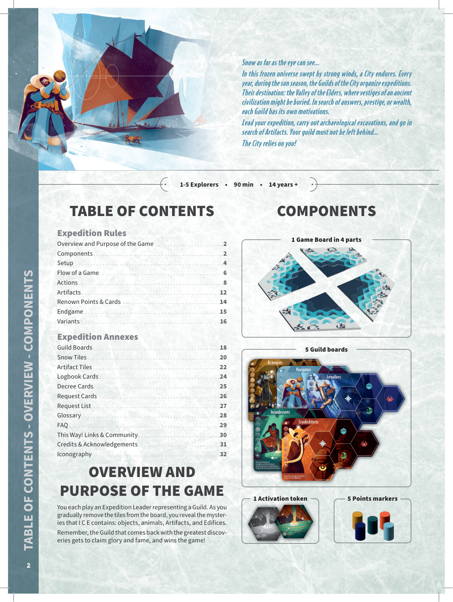
2组件
下列为游戏全部组件（含备用区与保留板块）。众筹「珍藏版（Collector box）」在数量与材质上有所不同，详见第 15 节。
由 4 块拼成。
每位玩家一块。
各公会对应颜色。
中立资源，所有玩家共用。
中立。
「1 RP」35 枚、 「5 RP」20 枚。
仅炽光公会（Incandescents）使用。
含文物、雪块、巨构等，见下。
含日志、法令、求索等，见下。
板块明细
铺设棋盘表层。雪块为双面：背面是 5 种场上地形——营地（Encampment）1、隧道（Tunnel）12、冰原孤岛（Nunatak）12、裂隙（Rift）12、空旷（Clear）11；正面是挖出后入手牌的效果（见第 11 节）。这 5 种地形不是独立板块，就是 48 块雪块的背面。
备用区，游戏中偶尔使用。与 48 块雪块合计 58 块雪块系。
板块总数 153 ＝ 58 雪块系（48 雪块＋10 雪片）＋ 37 表层 ＋ 27 中层 ＋ 19 深层文物 ＋ 12 巨构。
卡牌明细
基础版 6 张；众筹/珍藏版共 9 张。
其中 42 种各不相同，分 7 类。
卡牌共 74 张 ＝ 6 远征日志 ＋ 11 法令 ＋ 50 求索 ＋ 7 游戏辅助卡。远征手册与巨构手册为册子，不计入卡牌。
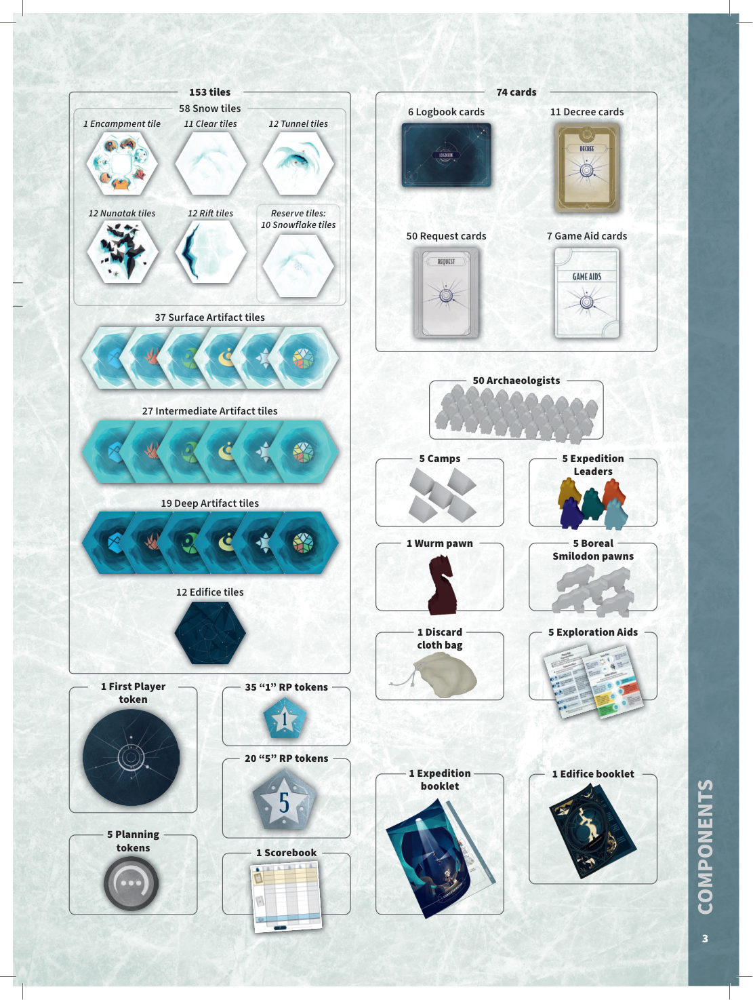
3准备
游戏分棋盘与板块、共享元素、每位玩家三部分布置。新手请遵循每张「新手提示（First Steps）」卡上的说明。
棋盘与板块（A–E）
- 拼好 4 块棋盘后，先将 12 块巨构板块 图面向下放入棋盘最底层（I C E 的最深处）。
- 其上放 19 块深层文物板块（图面向下）。
- 再其上放 27 块中层文物板块（图面向下）。
- 再其上放 37 块表层文物板块（图面向下）。
- 最上层放 48 块雪块（图面向下），构成游戏的表面。
共享元素（F–L）
- 每块隧道板块上放 1 名考古学家。
- 营地板块上放 1 个营地与 1 名考古学家。
- 将剩余考古学家、营地、剑齿虎、计划标记、1 RP / 5 RP 标记、雪片板块组成公共备用池。
- 把弃牌袋放在棋盘旁，游戏中玩家把弃除的板块放入其中。
- 洗混法令牌，旁边翻开 3 张；其余不用。
- 洗混求索牌成牌库，旁边放弃牌堆。
- 洗混 6 张远征日志牌成日志牌库。
每位玩家（M–R）
- 选一块公会板放在面前。选炽光公会者同时拿取激活标记。
- 拿取对应的远征队长。
- 拿取对应颜色的计分标记，放在公会板上探索点轨道的第 5 格。
- 拿取本公会的起始声望点。
- 洗混求索牌，每人发 4 张，弃 2 留 2（暗置）。这些求索牌为个人所有，仅由持有者于终局验证。
- 最近碰过冰的人拿先手标记。
公会板布局
- 公会名称与插画
- 起始声望点数
- 探索点（EP）轨道与计分标记
- 公会特殊能力
- 放置游戏中发现的文物的槽位
- 板旁「送往城市」的自由区
本书术语约定
- 探索点（EP）：用于执行行动，相当于行动点。
- 声望点（RP）：相当于胜利点。
- 探索者（Explorers）：含远征队长与考古学家。
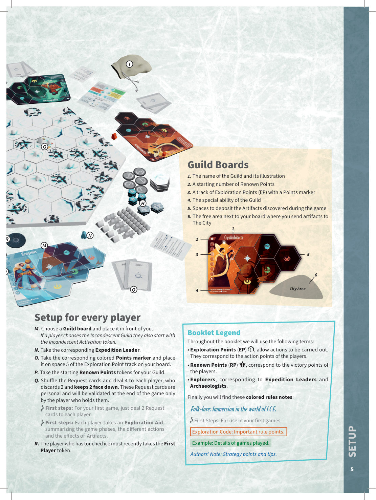
4游戏流程
一局最多进行 7 天（Days），每天含 2 个阶段：
所有玩家同时进行，含 3 步：
- 重置 EP：每人把自己的 EP 重置为 5，外加计划标记带来的加成（若使用则弃掉该标记）。
- 文物翻面：把公会板上所有暗置文物翻成明置；如有棱光文物可移动到任意槽位。
- 新事件：上一天先手者左侧的玩家拿先手标记，新先手翻开日志牌库第一张并结算其效果，然后进入探索阶段。
探索阶段由若干回合组成，每位玩家轮流行动。每回合玩家从自己的 EP 储备中花费 EP 来执行行动，直到所有人都结束当天。
- 执行行动：顺时针轮流，每次花费 1–2 EP（每花 1 EP 把 EP 标记下移一格）。
- 结束当天：当某玩家 EP 储备耗尽、并完成任意免费行动后，其当天结束，最多可向城市送 3 件文物。
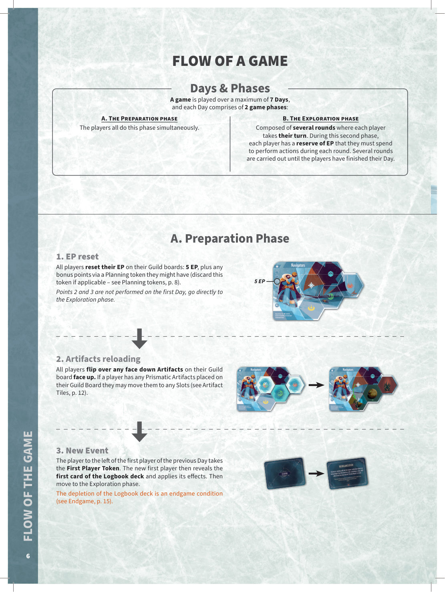
5行动
以下行动在探索阶段你的回合中执行。考古学家与营地无颜色，为所有玩家共用。
基础行动
从备用区拿一块新营地，放到一块未被覆盖的板块上（其上不能有别的板块重叠）；同时把你的远征队长放到该板块上。
在带营地的板块上放置一名探索者：从备用区拿 1 名考古学家放到有营地的板块；或把你的远征队长从某板块（或备用区）移到有营地的板块。召集行动时考古学家不随队长移动。
拿取一个计划标记。该标记须在下一天准备阶段用来把你的 EP 储备 +1。每人最多持有 1 个计划标记，且不能在拿取的当天使用。
你的回合中可花费 3 EP（而非通常的 1–2）。此行动本身消耗 RP，不获得 EP，仍需从储备中支出。
把远征队长移到相邻板块（见邻接规则）。队长移动时可免费带上同板块上的 1–3 名考古学家（仅限与队长同板块者）。不能只移动考古学家而不带队长；不能带队长跨越裂隙（Rift）。棋盘边缘视为板块，可在其上行走（表层边缘除外）。
挖掘（Excavate） 基础花费 3 EP
移除你的远征队长所在的板块。可挖完全裸露的板块，或被恰好 1 块板块部分覆盖的板块。
- ① 算费并判断能否执行：先按下方「挖掘花费规则」调整基础 3 EP，确认 EP 足够且符合限制。不能挖：被 2 块及以上板块覆盖的板块；或被「本身又被另一块部分覆盖的板块」所覆盖的板块（间接覆盖）。
- ② 移除板块：移除队长所在的这块板块。若它恰好被 1 块板块部分覆盖，则覆盖它的那块也随之一并移除（放入弃牌袋）。
- ③ 移动探索者：把被挖板块上的探索者按「放置规则」分到其下 3 块板块。
- ④ 收取板块：若是雪块，秘密拿入手牌；若是文物板块，明置（插图面向上）放到公会板对应文物槽位。
- 修正基础费用：下列情形使基础费用变为 4 EP（即在 3 EP 上 +1）：
- 板块含营地或冰原孤岛（Nunatak）；
- 板块被恰好 1 块板块部分覆盖。
- 因探索者减少费用：板块上每有 1 名探索者，费用 −1 EP。探索者含你的远征队长、对手队长（若有）、考古学家。
- 支付剩余费用：调整后若为 0 EP，则免费挖掘；否则支付调整后的 EP。
上限：无论修正多少重（含多重 +1 EP 叠加），调整后的挖掘费用永不超过 4 EP。
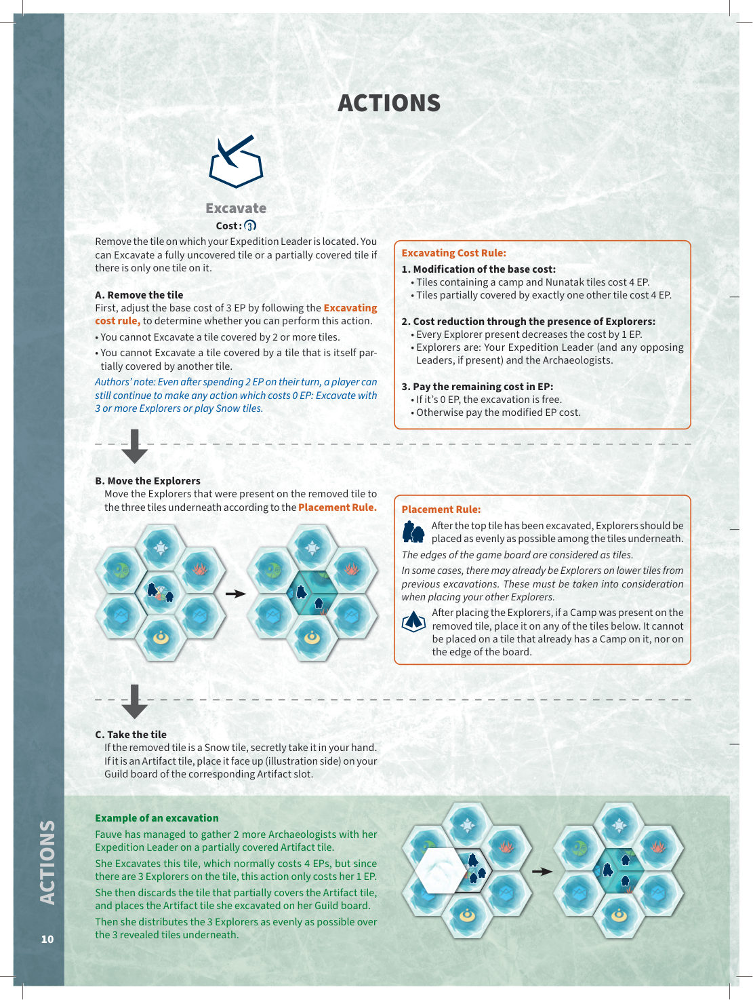
其他行动
抽 3 张求索牌，选 1 张保留，其余 2 张弃掉。终局未验证的每张求索牌让你 −2 RP。
直接进入探索阶段第 2 步：向城市送最多 4 件文物（而非 3），并结束当天。
6文物
文物板块分 3 个深度层级，颜色随埋藏深度逐渐变深：表层（Surface）、中层（Intermediate）、深层（Deep）。板块背面（图面向下）透过冰可见对应类型的象形图；正面是插画，下方标注形状（Shape）、类型（Type）与灵力（Anima）。
类型与灵力
文物共有 5 种基本类型，外加可作百搭的棱光（Prismatic）文物：
百搭，可放在任意槽位。
每种类型有 3 种形状（Shape 1/2/3）（棱光无形状），形状用于部分求索牌与法令牌。每类文物下可放多件。文物的灵力代表其强度，每件文物只有灵力 1 或灵力 2 两种强度。
- 留在公会板（Guild board）：当某槽位灵力合计 ≥ 2 时，可在你的回合内作为免费行动触发该类型的灵力效果（每类每天 1 次）。这是文物唯一能触发能力的场合。
- 送往城市（City）：文物一旦离开公会板便不再触发能力，但送出的当场按灵力得 1 RP（灵力 1）或 2 RP（灵力 2）；这些城市文物是终局唯一计入法令牌与求索牌计分的文物（留在公会板的文物终局直接弃除、不得分）。
5 类文物的效果（仅公会板文物可触发）
在你的探索轨道上 +1 EP。
支付 1 EP，把每块相邻板块上的 1 名考古学家移到你的远征队长所在板块。
挖掘并分配完考古学家后，从备用区拿 1 名考古学家放到你的远征队长板块上。
弃除你的远征队长所在板块旁一块完全裸露的板块，放入弃牌袋。其上的棋子回到备用区或对应玩家。
在你的回合中，于某板块正被弃除的瞬间收取该板块（雪块板块或文物板块均可）。可收取坍塌板块，或通过文物/雪块能力从棋盘弃除的板块。
棱光文物可当作任意类型文物，放到任意槽位。仅在准备阶段可把每件棱光文物移到新槽位。终局计分时必须确定每件棱光文物的最终类型。棱光文物没有形状。
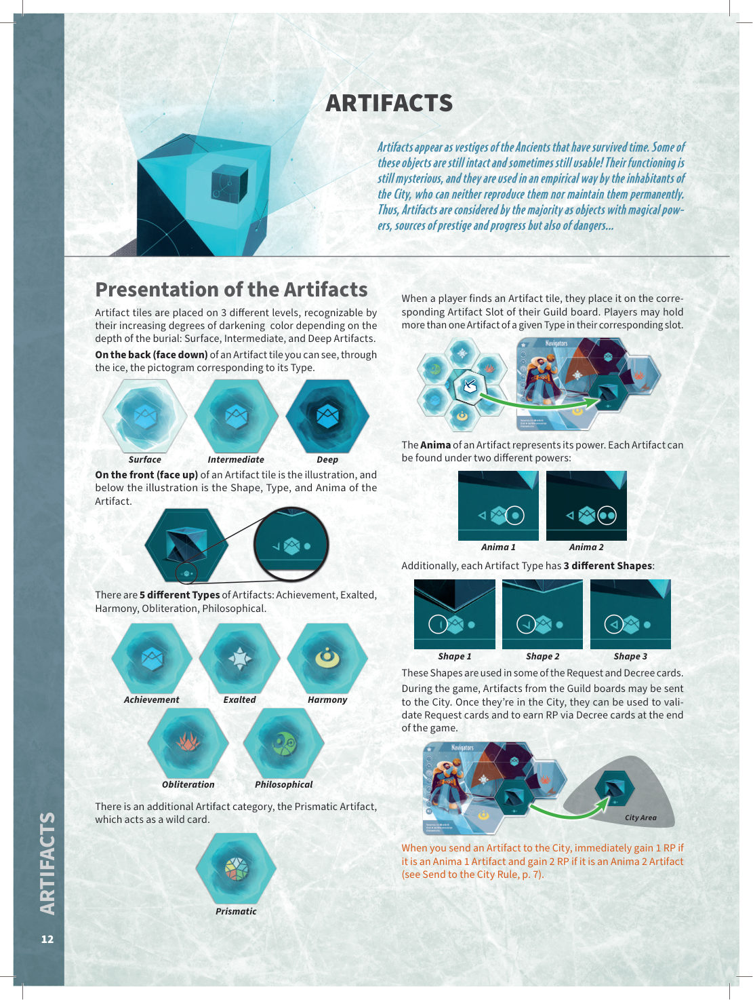
7声望点与卡牌
城市由长老议会治理，常向各公会提出请求。声望（RP）决定公会的名望，也即终局得分。
三种卡牌
远征日志牌每天（首天除外）准备阶段翻开。每张触发一次性事件，或在当天持续生效。游戏中获得的 RP 以 1 RP / 5 RP 标记表示，放在公会板旁。
求索牌个人所有。每人起始 2 张，可通过「查阅登记册」获得更多。终局以文物支付其费用来验证（详见第 12 节）。
公开。共 11 张，约 6 种类型。开局在棋盘旁翻开 3 张。与求索牌不同，法令牌没有费用，只有条件，因此可多次验证。玩家根据游戏中送往城市的文物获得 RP。
法令计分方式（公开，可重复累计）
法令牌共有 11 张、约 6 种类型；新手局从标有白色符号的「新手步骤（First Steps）」3 张开始。开局翻开 3 张，下列为各类型描述。
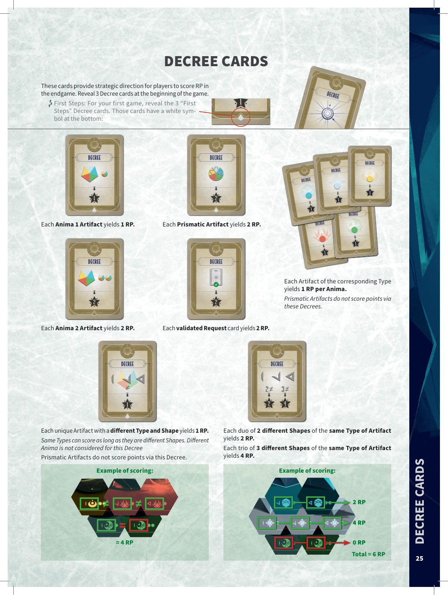
求索牌示例（个人，终局支付文物验证）
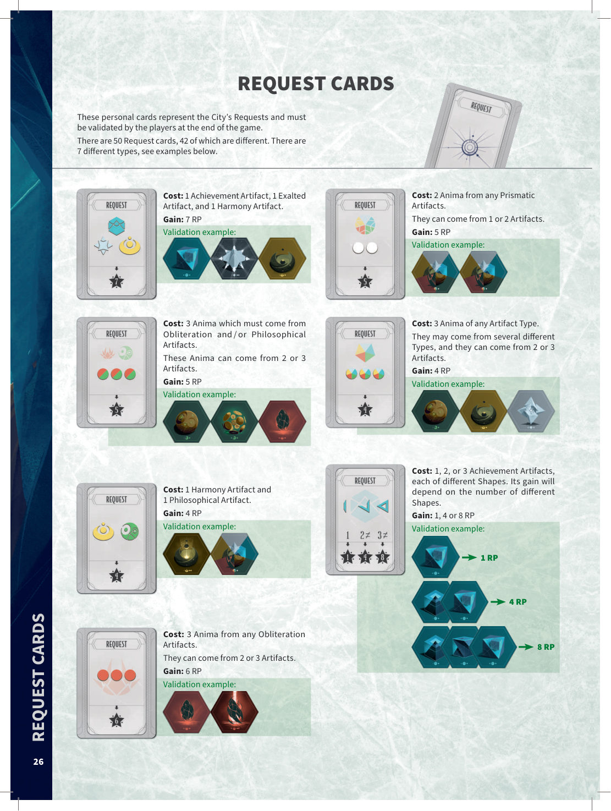
8终局与计分
终局触发条件
计分步骤
- 处理法令：把你送往城市的文物经 3 张公开法令带来的 RP 相加（公会板上残留的文物已在计分前弃除、不计入）。同一法令条件满足多次，每次都得分。
- 验证求索：每位玩家验证自己能支付的求索牌，以送往城市的文物支付费用（同一文物不能支付多张求索）。可验证的求索各加对应 RP，每张未验证求索 −2 RP。
- 声望点标记：把游戏中获得的 RP 标记相加。
RP 最高者获胜；平局则共享胜利。
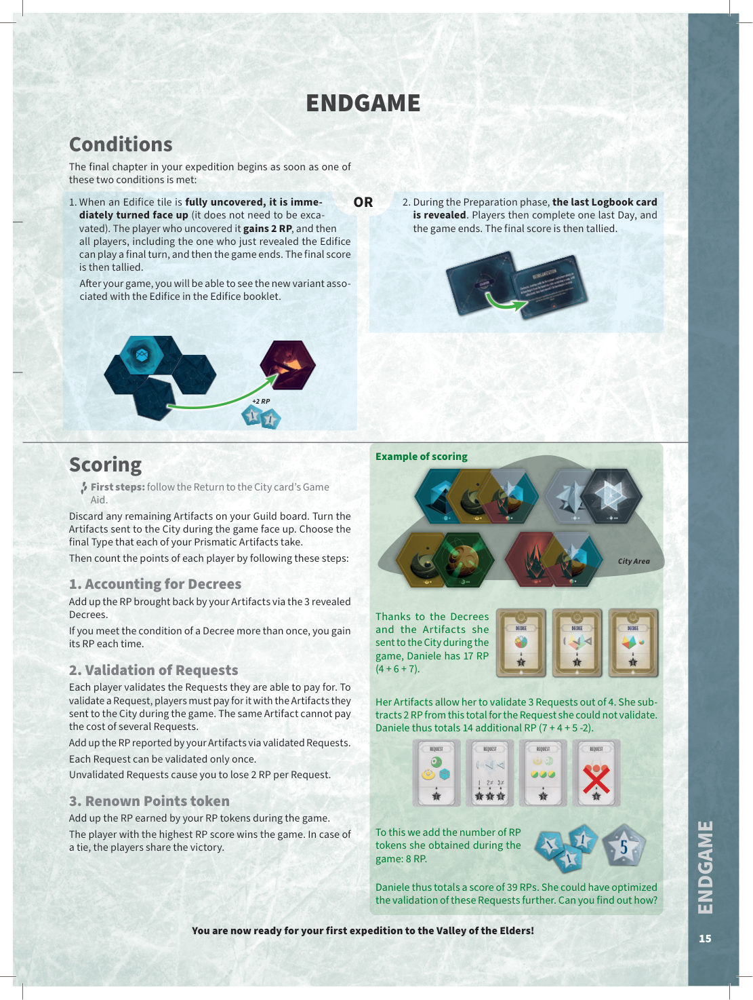
9变体
调整：移动行动允许用 1 EP 移动 1–2 块板块，但每回合只能用一次。
10 天内完成 3 个目标：向城市送至少 19 件文物；验证至少 7 张求索牌；完全挖出一块巨构板块。调整：不再使用计划行动；日志牌库耗尽时洗混弃牌堆重组成新牌库。
合作模式须在限定时间内挖出巨构并完成目标（2–3 人：5 天内挖出、每人送 10 件、验证 25 分；4 人：4 天内、每人 9 件、20 分；5 人：4 天内、每人 8 件、20 分）。调整：召集考古学家行动花费 2 EP（而非 1）。双人合作模式同时适用双人规则与合作规则。
每人发 4 张求索牌，各选 1 张，剩余传给左侧玩家；再选第 2 张，弃掉剩余 2 张。
I C E 的每一局会互相影响。长者之谷藏着许多秘密——每次远征可能带来新巨构与新变体，下一局可自由选择使用。巨构手册周期性揭示 12 块巨构的功能。单人/合作模式中，玩家可随时弃除以下 3 张雪块之一来获得 1 EP + 1 RP：北境剑齿虎、魅力石、风暴号角。
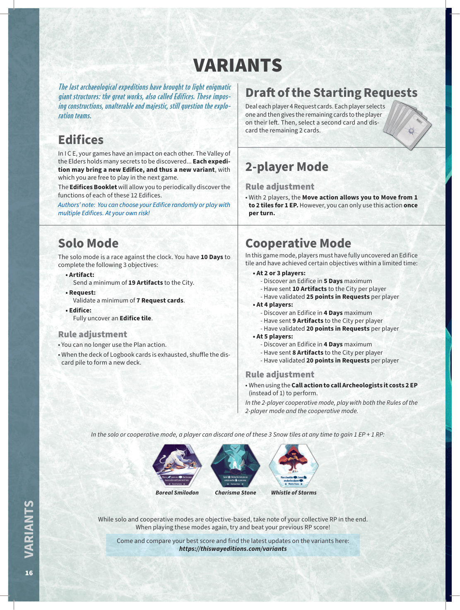
10公会
每位玩家依公会板获得起始 RP与独特能力（仅在你回合使用）。
基础 5 公会
每回合一次：挖掘含营地的板块时，视同额外有 1 名考古学家与你同在。挖完后照常把营地放到下方任意板块。注意：营地仍会使挖掘基础花费 +1 EP。
每天一次：若你的远征队长在文物板块上，可把激活标记放在公会板对应文物槽位，当天获得该类文物效果。使用后把标记翻到灰色面。炽光公会是唯一能在一天内两次触发同一类文物效果的公会（靠能力与公会板文物）。每天结束移除激活标记。若队长在棱光文物板块上，则不能使用此能力。
每回合一次：挖掘时，在按放置规则安置完所有考古学家与他人队长后，可不受限制地把你的远征队长放到下方 3 块中的任意一块。
每回合一次：1–3 名考古学家可在你通过召集、建立营地、或使用雪块移动时跟随你的远征队长。
每天一次：从弃牌袋随机取最多 3 块板块，选 1 块、其余 2 块放回。若是雪块则入手牌；若是文物则放公会板。
众筹新增 2 公会（见第 15 节）
每回合一次：使用召集行动时，可从备用区直接把 1 名考古学家放到你的远征队长板块上（而非营地）。
挖掘板块、在翻面之前，可先对其做预测：雪块猜类型（动物 / 远征 / 长者），猜中则翻面并得 1 EP；文物猜形状（1/2/3），猜中则翻面并得 2 RP。不能对棱光文物做预测。
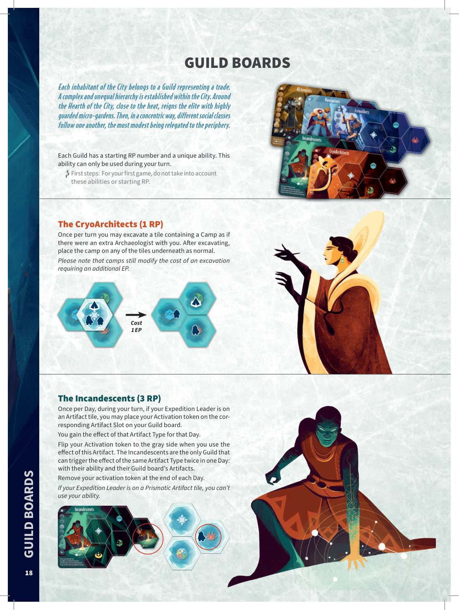
11雪块
棋盘含 48 块雪块，备用区另有 10 块雪片（Snowflake）。雪块有正反两面：背面是场上地貌（留在棋盘上时生效）；正面是手牌效果（挖出后组入手牌，回合中免费打出）。手牌最多 4 张，超出则弃除多余的；打出后雪块放入弃牌袋。
背面·地貌（场上时生效，5 种）
雪块在棋盘上时正面朝下、显露背面插画，标出该板块的地貌特性；该板块离开棋盘前一直生效。
准备时在此放 1 个营地与 1 名考古学家。
准备时在此放 1 名考古学家。
两侧有裂隙插画，探索者不能跨越这两侧（雪块、公会能力、文物效果亦同）。
挖掘花费 +1 EP。
无特殊效果。
正面·效果（手牌打出，12 种 / 3 大类）
雪块挖出后正面朝上、加入手牌，回合中任何时刻可免费打出结算效果（打出后放入弃牌袋）。正面按大类分 3 类（启明公会预测用），共 12 种：
动物类（Animal Tiles，4 种）
把所有考古学家从一块板块移到相邻板块。
若队长在其上，免费挖一块雪块；可挖仅被 1 块覆盖的板块。
免费把远征队长移到棋盘任意板块；同板块考古学家不跟随。
放剑齿虎棋子于板块；下回合开始归还备用区。带剑齿虎的板块「不可进入」。
远征类（Expedition Tiles，4 种）
从备用区在你的队长板块放 1 名考古学家，并在另一名玩家的队长板块放 1 名；得 1 RP。
挖掘时忽略放置规则，自行分配下方探索者。可立即用于揭示它的那次挖掘。
得 1 EP 与 1 RP，并选另一名玩家得 1 EP（若其已结束当天，则下一天起始 +1 EP）。
挖掘时从备用区多拿 2 名考古学家，随其他探索者按放置规则安置。可立即使用。
长者类（Elders tiles，4 种）
若队长在其上，免费挖该类型文物板块；可挖仅被 1 块覆盖者。不能用于棱光文物。
花 1 RP 打出：本回合可把任意远征队长当自己的用（考古学家可跟随，可挖并收取挖出板块），所用行动照常从你 EP 储备扣除。
秘密弃除棋盘上任意完全裸露的板块（不能弃含营地的），其棋子回备用区或对应玩家。
在棋盘任意处放 1 块雪片：须直接盖在 3 块板块上（或沿边缘），下方无空隙，且与同层至少 2 块相接。被完全覆盖板块上的探索者尽量均匀移到相邻板块。不能盖含营地或剑齿虎的板块。
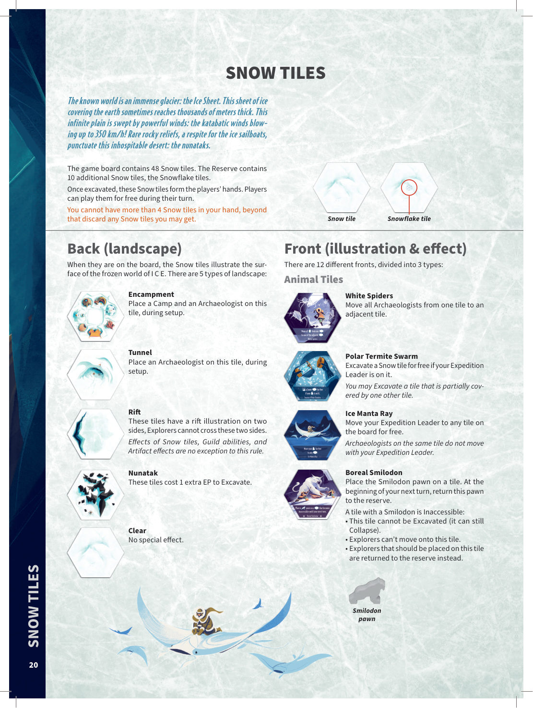
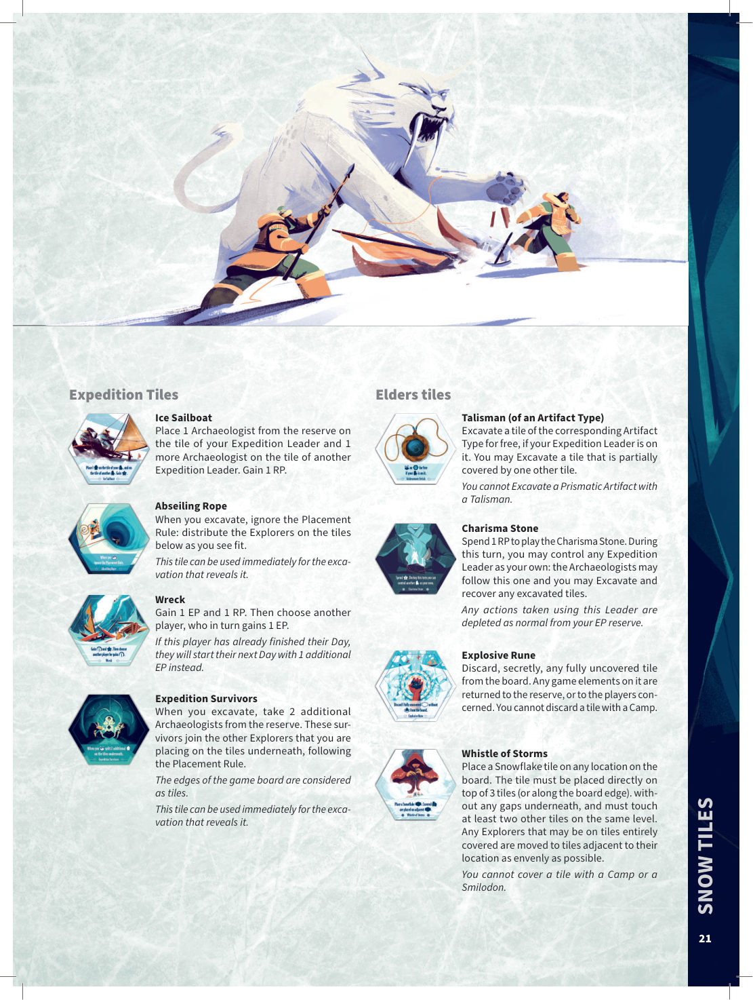
12附录：牌组与文物分布
文物板块分布
- 表层（37 块）：30 件灵力 1，7 件棱光（灵力 1）。
- 中层（27 块）：15 件灵力 1，10 件灵力 2，2 件棱光（灵力 1）。
- 深层（19 块）：15 件灵力 2，4 件棱光（灵力 2）。
远征日志牌（基础版 6 张；众筹/珍藏版 9 张）
除首天外，每天准备阶段翻开一张，指示需完成的事件（如按顺时针放置考古学家、在有剑齿虎的板块放棋子、从弃牌袋随机取雪片等）。不能弃除巨构板块；若你的远征队长不在棋盘上，则该事件占用一名考古学家的位置（该考古学家回备用区）。
法令牌（11 张）
开局翻开 3 张，公开、可多次验证（计分方式见第 7 节）。
求索牌（50 张，42 种，7 类）
个人所有，终局以送往城市的文物支付费用验证；费用中的「灵力」可来自多件文物，未验证每张 −2 RP。示例见第 7 节。
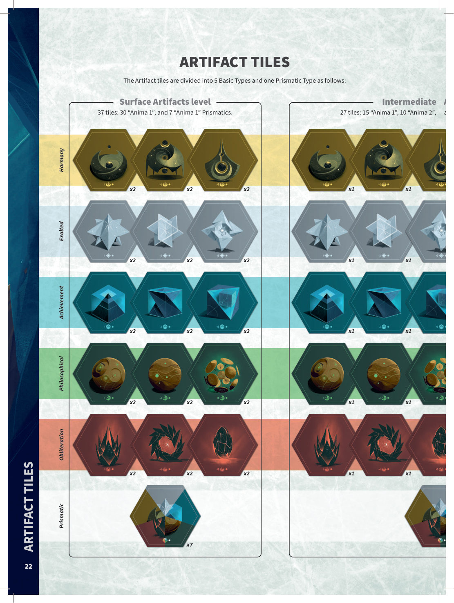
13术语表
探索阶段执行，可付费（EP/RP）或免费。
同层一边相接，或异层部分覆盖，即相邻。
文物的强度（1 或 2）。
代表所有玩家共用的中立资源的小米宝。
具类型、形状与灵力的板块，挖出后放公会板，当天结束可送城市。
每类 3 种形状（棱光除外）；每块公会板有 5 个六边形槽位对应 5 类型。
见第 5 节；城市即每天结束送文物的区域。
同层只剩 ≤1 相邻板块即弃除，其上棋子回备用区。
公开牌，终局赢 RP，无费用、可重复。
游戏分段，每天含准备与探索两阶段。
卡牌放对应弃牌堆；板块移入弃牌袋（其上棋子回备用区）。
棋盘最深层板块，定义游戏变体；翻出即触发终局。
回合行动点，每天重置。
取走队长所在（未覆盖或仅被 1 块覆盖）的板块；每有 1 探索者 −1 EP。
隶属公会、代表玩家的彩色米宝。
见第 4、10 节。
带剑齿虎的板块（见第 11 节）。
每天（首天除外）翻开，指示事件。
分别见对应章节。
14常见问题
- 含冰原孤岛且含营地的板块要 5 EP 吗？不，挖掘基础花费永不超过 4 EP，多重修正亦然。
- 每天最多向城市送几件文物？通常 3 件；用「再送」行动最多 4 件。
- 一天 EP 储备最高多少？储备可在当天增加，但不能超过 7 EP。
- 能在已有营地的板块上再放营地吗？不能；若挖出含营地的板块后无处可放，营地回备用区。
- 备用区没有考古学家了怎么办？不能使用召集考古学家行动。
- 想查阅登记册但求索牌库空了？洗混弃牌堆重组成新牌库。
- 没有 RP 标记可取了？RP 标记是游戏中唯一不会耗尽的元素，可用替代物。
- 能受益于送往城市的文物效果吗？不能——它们已不在公会板，不计入效果解锁。
- 要取雪片但备用池空了？从弃牌袋随机取一块；若取到文物则放回重取。
- 能用风暴号角把板块盖在雪层之上吗？不能，板块不能放在雪层之上。
- 能用 2 件灵力 2 文物验证需 3 灵力的求索吗？可以——可用多于所需灵力的文物验证。
- 合作模式中提前翻出巨构会结束游戏吗？会！但若未达成人数对应目标就发生，你们将输掉。
- 板块/卡牌上有些图形好像没用到？那是 I C E 的 Legacy 成分（巨构带来的变体），部分图形供某些巨构使用。
15众筹版本（Kickstarter）
近几次远征给城市带来诸多变化，上次长老议会接纳了两个新公会。下表对比核心版（Core box）与珍藏版（Collector box）的组件差异（珍藏版以豪华配件替换核心版对应物）。
- 2 块公会板
- 35 枚金属「1 RP」标记
- 20 枚金属「5 RP」标记
- 2 名远征队长
- 50 名考古学家
- 5 个计划标记
- 1 个先手标记
- 5 个营地
- 2 个计分标记
- 5 只丝绸印制北境剑齿虎
- 1 个蠕虫棋子
- 1 个沙色弃牌袋
- 1 个拨片（guitar pick）
- 7 块双层公会板
- 35 枚金属「1 RP」标记（同上）
- 20 枚金属「5 RP」标记（同上）
- 7 名独特丝印造型远征队长
- 50 名个性化丝印考古学家
- 5 个计划标记（同上）
- 1 个金属先手标记
- 5 个定制丝印营地
- 2 个计分标记（同上）
- 5 只丝印北境剑齿虎（同上）
- 1 个丝印蠕虫棋子
- 1 个沙色弃牌袋（同上）
- — （无拨片）
珍藏版说明
- 考古学家有自己专属的沙色袋子，既是备用区也是弃牌堆。
- 日志牌：珍藏版共 9 张，洗混后随机取 6 张组成本局日志牌库；首局取编号 1–6 按升序组库（基础版为 6 张）。
- 新增 2 个公会（见第 10 节）：滋养公会、启明公会。
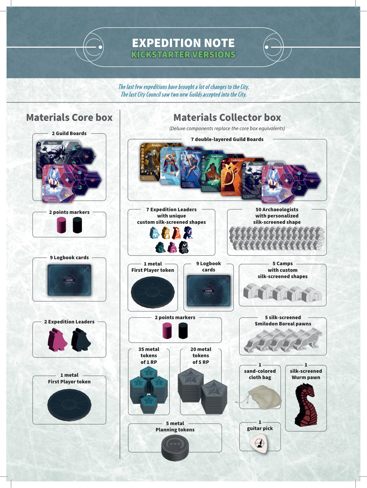
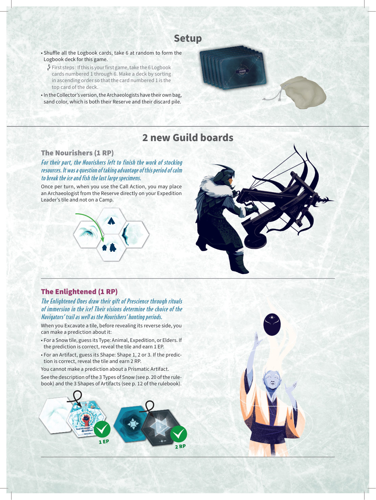
16制作人员
作者：Hugo Freyermuth、Samson F. Perret
艺术指导与插画：Léonard Dupond
平面设计：Alexis Vanmeerbeeck
规则校对：Pauline Lelievre、Anton Kawasaki、Stefen Gueguen、Florent Reymond-Gaudry、François Alligier、Kyle Lukacoivc
翻译：Torsten Sammet、Jurgen Degryse、Bruce Fletcher
制造：Panda Game Manufacturing
内衬设计（Insert Design）：Matt Healey
众筹视频：Noémi Gruner、Antoine Delabarre、Hadrien Kobylarz
测试：Tabletop Simulator 上提供宝贵反馈的所有玩家
致谢：Basara、Druss、Mustang mvp、Nixx（支持与反馈）；Tyler Lipchen（Panda Games）；Nicolas Smeers（Azao Games，原型支持）；Romain Libersa（文物图标图形）；Collin Spanberger（玩家社群）；Anton Kawasaki（This Way! 网站）。最后，特别感谢 Faustine、Noémi、Chris、Da 三年来的无条件支持与耐心。
众筹：2021 年 5 月首次 Kickstarter，共 3937 名支持者。
版权：© 2022 This Way! www.thiswayeditions.com
社区：Facebook / Discord / @thiswayice；可在 Steam 的 Tabletop Simulator 上体验数字版；规则多语言下载见 thiswayeditions.com。